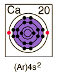

Calcium
|  | Calcium is a silvery white metal which is chemically active, reacting with cold water to produce calcium hydroxide, Ca(OH)2. It burns readily in air, producing calcium oxide, CaO, and calcium nitride, Ca3N2.
Calcium is used as a deoxidizer to remove oxygen from iron and steel in their production and in the production of copper and copper alloys. Calcium is used as a constituent in lead alloys used for bearings and the sheaths for electric cables. Calcium is also used in aluminum alloys.
|
Calcium is one of the big 8 elements in the Earth's crust, being the fifth most abundant element at about 3.6% by weight. In nature, calcium occurs in the form of gypsum, which is calcium sulfate CaSO4.2H2O . Gypsum is used widely for wallboard and for conversion into plaster of Paris. Plaster of Paris is created by heating gypsum to a little above 100°C where it loses three-quarters of its water of hydration and becomes the powdered substance CaSO4. 1/2 H2O.
It also occurs in the abundant mineral calcite, CaCO3 and in Aragonite, also with composition CaCO3. Along with barium it forms the carbonate mineral alstonite. It is a constituent of the plagioclase form of feldspar and contained in hornblende. Calcium is found with boron in the silicate minerals danburite, datolite and Howlite and in the oxide inyoite. It is contained in the minerals dolomite and Powellite.
Calcium appears in the carbonate mineral Bensonite. Calcium is a constituent of many silicate minerals. The simple calcium silicate, CaSiO3, occurs in the mineral wollastonite. A hydrated form of calcium silicate is okenite, Ca10Si18O46.18H2O. Manganese with calcium forms the mineral bustamite. Magnesium with calcium forms the gem mineral diopside which has the composition CaMgSi2O6. Zoisite is another calcium silicate which is sometimes of gem quality.
Calcium combines with fluorine nature to form minerals such as fluorite, CaF2, which can produce gem quality crystals. Also occurring as a mineral is fluorapatite, Ca5(PO4)3F, which is a constituent of bones and teeth. A small percentage of fluorapatite along with the more abundant calcium phosphates in teeth can make them more resistant to decay.
Graftonite is a phosphate mineral of iron, manganese and calcium.
Titanium and calcium form the oxide perovskite, CaTiO3.
|
Index
Periodic Table
Chemistry concepts
Reference
Pauling
Ch. 26 |